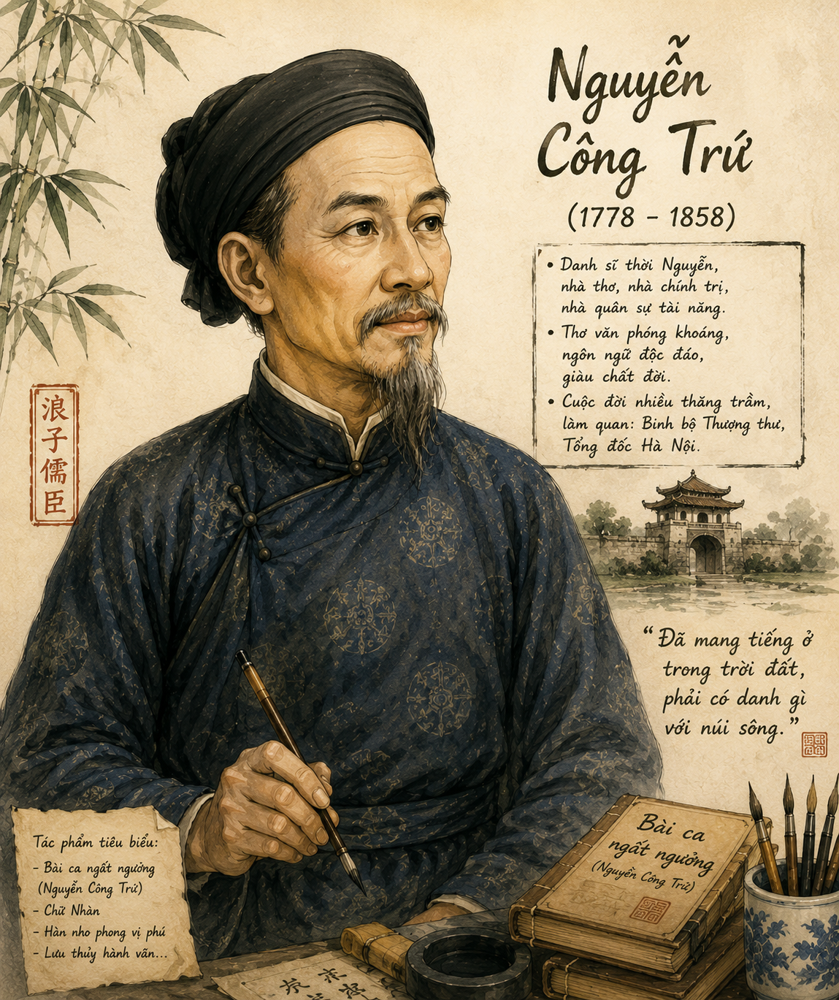

1. Theo quan sát của bạn, hiện nay "cá tính" được giới trẻ nhìn nhận như thế nào?
2. Nêu suy nghĩ của bạn khi nghe nhận xét về một người nào đó có "vị trí cao ngất ngưởng" và khi nghe đánh giá về một ai đó có "thái độ ngất ngưởng". Từ ngất ngưởng trong hai trường hợp trên có giống nhau hay không?
• Tiểu sử: Nguyễn Công Trứ tự Tồn Chất, hiệu Ngộ Trai, biệt hiệu Hy Văn, quê ở huyện Nghi Xuân, tỉnh Hà Tĩnh. Năm 42 tuổi, ông đỗ Giải nguyên (1819), ra làm quan dưới triều Nguyễn.
• Cuộc đời quan trường: Trải qua nhiều lần thăng giáng trầm bổng (thăng đến Thượng thư, Tổng đốc; giáng xuống làm lính thú ở biên thuỳ). Dù ở vị trí nào, ông cũng giữ bản lĩnh cứng cỏi, nhiệt huyết với trọng trách được giao.
• Sự nghiệp & Cống hiến: Văn võ toàn tài, có công lớn trong quân sự, kinh tế (lập ra các huyện Kim Sơn - Ninh Bình, Tiền Hải - Thái Bình), thơ văn sắc sảo, giàu cá tính.

Hình 1: Chân dung Nguyễn Công Trứ (h1.png)
• Xuất xứ: Tác phẩm được viết sau khi Nguyễn Công Trứ cáo quan về quê (1848). Công bố lần đầu bởi Lê Thước (1928).
• Thể loại: Thơ Hát nói – thể thơ do người Việt sáng tạo, kết hợp song thất lục bát, lục bát và nói lối trong ca trù.
• Chủ đề: Bài thơ tự thuật về cuộc đời phong phú và tự hoạ chân dung tinh thần độc đáo, khẳng định bản lĩnh "ngất ngưởng" cá nhân vượt lên trên những khuôn mẫu hẹp hòi của thời đại.
Thơ hát nói có số câu, số chữ tự do, gieo vần linh hoạt, rất phù hợp để các nhà thơ có cá tính mạnh mẽ, tâm hồn phóng túng biểu đạt tư tưởng tài tử của mình.
Vũ trụ nội mạc phi phận sự (1),
Ông Hy Văn tài bộ (2) đã vào lồng (3).
Khi Thủ khoa, khi Tham tán, khi Tổng đốc Đông (4),
Gồm thao lược đã nên tay ngất ngưởng.
Lúc bình Tây, cờ đại tướng (5),
Có khi về Phủ doãn Thừa Thiên (6).
Đô môn giải tổ chi niên (7),
Đạc ngựa bò vàng (1-tr.96) đeo ngất ngưởng.
Kìa núi nọ phau phau mây trắng,
Tay kiếm cung mà nên dạng từ bi (2-tr.96),
Gót tiên theo đủng đỉnh một đôi dì (3-tr.96),
Bụt cũng nực cười ông ngất ngưởng.
Được mất dương dương người tái thượng (4-tr.96),
Khen chê phơi phới ngọn đông phong (5-tr.96).
Khi ca, khi tửu, khi cắc, khi tùng (6-tr.96),
Không Phật, không tiên, không vướng tục.
Chẳng Trái, Nhạc cũng vào phường Hàn, Phú (7-tr.96),
Nghĩa vua tôi cho vẹn đạo sơ chung (8-tr.96).
Trong triều ai ngất ngưởng như ông! (9-tr.96)
• Quan niệm sống: Coi mọi việc trong trời đất đều là phận sự của mình (Vũ trụ nội mạc phi phận sự) – tinh thần nhập thế tích cực của nhà Nho.
• Ý thức tài năng: Xem chốn quan trường là "vào lồng", nhưng khẳng định tài năng đa dạng: từ văn (Thủ khoa) đến võ (Tham tán, Tổng đốc, Bình Tây đại tướng).
• Cốt cách: Làm quan không phải vì vinh hoa mà để thi triển tài năng thao lược, giữ tư thế tự do, "ngất ngưởng".
• Hành động độc đáo: Cưỡi bò vàng đeo đạc ngựa rời kinh thành; dẫn các cô hầu đi chùa.
• Thái độ sống: Coi nhẹ chuyện được mất ("Được mất dương dương người tái thượng"), bỏ qua khen chê thế thái nhân tình ("Khen chê phơi phới ngọn đông phong").
• Nếp sống tài tử: Thưởng ca trù, uống rượu, sống tự do tự tại, vượt ra ngoài mọi khuôn khổ gò bó phong kiến.
• Khẳng định tấm lòng thuỷ chung vẹn toàn với vua, với nước ("vẹn đạo sơ chung").
• Đặt mình ngang hàng với các danh tướng cổ đại (Trái Tuân, Nhạc Phi, Hàn Kỳ, Phú Bật).
• Kết câu đầy tự hào, thách thức: "Trong triều ai ngất ngưởng như ông!".
Vấn đề: Hãy suy ngẫm về cụm từ "Bụt cũng nực cười ông ngất ngưởng". Vì sao "Bụt" lại cười? Đây là nụ cười mang ý nghĩa gì trong tác phẩm?
Hướng giải quyết:
• "Bụt cười" vì hành động kỳ lạ, ngông ngạo của tác giả: Đi chùa lễ Phật nhưng lại dẫn theo các cô hầu nữ ("đủng đỉnh một đôi dì"), tay từng mang kiếm cung chém giết nay lại "nên dạng từ bi".
• Đây là nụ cười hóm hỉnh, sảng khoái trước một nhân cách độc đáo, không tuân theo giới luật hay khuôn mẫu khắt khe của tôn giáo. Nó thể hiện tính cách phóng túng, hồn nhiên và tự do tuyệt đối của Nguyễn Công Trứ.
Nghĩa của từ "ngất ngưởng" trong tên bài thơ và các ngữ cảnh của bài học được hiểu như thế nào?
Trả lời:
• Nghĩa đen: Ở độ cao chao đảo, không vững vàng.
• Nghĩa trong bài: Chỉ lối sống, thái độ sống khác người, vượt ra ngoài mọi khuôn mẫu, thể hiện sự coi thường những ràng buộc danh lợi, khen chê của thế thái nhân tình, tự tin khẳng định tài năng và phong cách riêng.
Bài thơ thể hiện bản lĩnh sống độc đáo của Nguyễn Công Trứ: Luôn hết lòng vì dân vì nước trên đường công danh, đồng thời giữ vững phong cách sống phóng túng, tự do, vượt lên những dư luận hẹp hòi của xã hội phong kiến.
• Thể thơ Hát nói đạt đến trình độ chuẩn mực, tự do, phóng khoáng.
• Ngôn ngữ kết hợp giữa hán văn trang trọng và khẩu ngữ bình dị.
• Nhịp điệu linh hoạt, giọng điệu tự hào, ngông ngạo mà hóm hỉnh.
Năm 1858, khi thực dân Pháp nổ súng xâm lược Đà Nẵng, dù đã 80 tuổi và đang nghỉ hưu tại quê nhà, Nguyễn Công Trứ vẫn dâng sớ xin vua Tự Đức cho phép ông cầm quân ra trận đánh giặc. Tấm lòng "nghĩa vua tôi cho vẹn đạo sơ chung" của ông không chỉ dừng lại trên trang thơ mà là một tinh thần hành động suốt đời.
• Vận dụng lối tư duy cá tính của Nguyễn Công Trứ để tự tin thể hiện sự sáng tạo và phong cách cá nhân trong học tập và nghệ thuật.
• Rèn luyện thái độ sống tích cực: Dũng cảm nhận trách nhiệm với cộng đồng ("nội mạc phi phận sự") và điềm tĩnh trước khen chê, thắng thua trong cuộc sống.
Tránh nhầm lẫn cái "ngông/ngất ngưởng" của Nguyễn Công Trứ với thái độ vô trách nhiệm hay sự ngông cuồng vô căn cứ. Cái "ngất ngưởng" của ông được xây dựng trên nền tảng tài năng thật sự, sự cống hiến to lớn cho đất nước và đạo đức trung hiếu trọn vẹn.
| Giai đoạn | Chức vị / Hoạt động | Thái độ & Phong cách |
|---|---|---|
| Khi làm quan | Thủ khoa, Tham tán, Tổng đốc, Bình Tây đại tướng, Phủ doãn | Thao lược, tài năng, khẳng định bản lĩnh "ngất ngưởng" |
| Khi về hưu | Cưỡi bò vàng, du ngoạn chùa chiền, ca tửu, thưởng ca trù | Phóng túng, tự do, coi nhẹ được mất khen chê |
| Tổng kết cuộc đời | Đứng vào hàng ngũ danh tướng (Hàn, Phú) | Sắt sắt lòng trung, tự hào vô song trong triều |
Câu 1 (trang 98): Liệt kê những từ ngữ mang tính chất tự xưng của tác giả trong bài hát nói. Những từ ngữ ấy thể hiện phong cách, tư tưởng của nhân vật trữ tình như thế nào?
Lời giải chi tiết:
• Các từ ngữ tự xưng: "Ông Hy Văn", "tay ngất ngưởng", "ông ngất ngưởng", "ông".
• Nhận xét: Việc gọi chính mình bằng tên hiệu (Hy Văn), danh xưng "ông" thể hiện sự tự tin, tự ý thức cao độ về giá trị bản thân, thái độ coi thường các quy phạm xưng dâng khiêm nhường thông thường của Nho giáo.
Câu 2 (trang 98): Căn cứ vào mạch ý của bài thơ, có thể chia bố cục tác phẩm thành mấy phần? Nêu ý chính của mỗi phần.
Lời giải chi tiết:
Bố cục chia làm 3 phần chính:
• Phần 1 (6 câu đầu): Bản lĩnh "ngất ngưởng" của tác giả khi đang trên đường công danh.
• Phần 2 (12 câu tiếp): Phong cách "ngất ngưởng" tự do, tài tử khi đã cáo quan về quê.
• Phần 3 (Câu kết): Lời khẳng định vị thế và tấm lòng sắt son vẹn toàn của tác giả.
Câu 3 (trang 98): Tra từ điển và chỉ ra những nét nghĩa khác nhau của từ "ngất ngưởng". Căn cứ mạch ý văn bản để xác định ý nghĩa từ này ở từng trường hợp xuất hiện.
Lời giải chi tiết:
• Lần 1 ("tay ngất ngưởng"): Tài năng xuất chúng, vượt trội trên chốn quan trường.
• Lần 2 ("đeo ngất ngưởng"): Sự độc đáo, phong cách khác đời (cưỡi bò đeo đạc ngựa).
• Lần 3 ("Bụt cũng nực cười ông ngất ngưởng"): Hành vi tự do, vượt qua khuôn mẫu tôn giáo gò bó.
• Lần 4 ("ai ngất ngưởng như ông"): Sự khẳng định tư thế đỉnh cao, một cá tính độc nhất vô nhị.
Câu 4 (trang 98): Thái độ sống, phong cách sống "ngất ngưởng" đã được tác giả thể hiện ở những phương diện cụ thể nào? Suy nghĩ của bạn về cách lựa chọn lối sống đó.
Lời giải chi tiết:
• Các phương diện: Hành động (cưỡi bò), thú vui (ca trù, đi chùa dẫn cô hầu), tâm thế (thản nhiên trước khen chê, may rủi).
• Suy nghĩ: Đây là lối sống tích cực, dũng cảm. Tác giả chọn lối sống ngất ngưởng không phải để trốn tránh trách nhiệm mà để giữ vững sự tự do tâm hồn sau khi đã cống hiến trọn vẹn cho đất nước.
Câu 5 (trang 98): Nhận xét về phong cách ngôn ngữ của tác giả thể hiện trong bài hát nói (từ ngữ, hình ảnh, tu từ, vần nhịp).
Lời giải chi tiết:
• Ngôn ngữ kết hợp giữa từ Hán Việt trang trọng (thao lược, giải tổ, sơ chung) và từ Nôm bình dị, giàu tính khẩu ngữ (ngất ngưởng, phau phau, cắc, tùng).
• Điệp từ "khi" lặp lại gợi nhịp sống biến hóa, giàu cảm xúc.
• Biện pháp đối lập giữa hình ảnh kiếm cung võ tướng và dáng vẻ từ bi đi chùa.
Câu 6 (trang 98): Suy nghĩ về sự hội tụ những yếu tố đối lập trong phong cách hành xử của Nguyễn Công Trứ. Ngoài chủ đề chính, bài thơ còn chủ đề nào khác?
Lời giải chi tiết:
• Sự hội tụ đối lập: Quan văn – quan võ; Nhập thế gánh vác – Xuất thế tự tại; Nghiêm túc tận trung – Phóng túng ngông ngạt.
• Chủ đề phụ: Lòng trung quân mến quốc và khát vọng khẳng định cái "I" cá nhân trong xã hội phong kiến.
Câu 7 (trang 98): Con người nhà Nho nhập thế và con người phóng túng tài tử có tạo nên sự đối lập về nhân cách không? Vì sao?
Lời giải chi tiết:
• Không tạo nên sự đối lập triệt tiêu mà bổ sung cho nhau hoàn chỉnh.
• Nhập thế là trách nhiệm đạo đức với xã hội; Phóng túng tài tử là cách giải phóng tâm hồn cá nhân. Hai khía cạnh hòa quyện làm nên một nhân cách Nguyễn Công Trứ toàn vẹn và độc đáo.
Hãy vượt qua 10 câu hỏi để khẳng định bản lĩnh "ngất ngưởng" kiến thức của bạn!
Viết đoạn văn (khoảng 150 chữ) bàn về cách ứng xử trước sự được mất, khen chê, may rủi... mà tác giả đã thể hiện trong "Bài ca ngất ngưởng".
Bài làm mẫu chi tiết:
Trong "Bài ca ngất ngưởng", Nguyễn Công Trứ đã thể hiện một thái độ ứng xử vô cùng bản lĩnh và điềm tĩnh trước sự được mất, khen chê của cuộc đời qua hai câu thơ: "Được mất dương dương người tái thượng / Khen chê phơi phới ngọn đông phong". Đối với ông, những biến cố được – mất trên đường đời chỉ tựa như câu chuyện "Tái ông thất mã", coi mọi rủi may ở đời là lẽ thường tình. Trước những lời khen chê của dư luận thế thái nhân tình, ông giữ tâm thế nhẹ nhàng, thản nhiên như gió xuân thổi qua. Đây không phải là sự thờ ơ hay trốn tránh, mà là biểu hiện của một tâm hồn tự do, một bản lĩnh vượt lên trên danh lợi phàm tục sau khi đã cống hiến hết mình cho đất nước. Thái độ ấy để lại bài học sâu sắc cho thế hệ trẻ hôm nay: Cần giữ vững định hướng giá trị bản thân, điềm nhiên trước thử thách và không bị thao túng bởi những lời khen chê cảm tính bên ngoài.
So sánh điểm giống và khác nhau giữa cái "ngông" của Nguyễn Công Trứ trong "Bài ca ngất ngưởng" với cái "ngông" của Tản Đà trong bài "Tản Đà ngông" hoặc "Thần Tản Tản Đà".
Hướng dẫn trả lời chi tiết:
• Giống nhau: Cả hai đều muốn khẳng định cái "Tôi" cá nhân giàu tài năng, ý thức sâu sắc về giá trị bản thân, vượt lên trên khuôn mẫu khắt khe của xã hội thời đại mình sống.
• Khác nhau:
- Nguyễn Công Trứ: Cái "ngông" dựa trên nền tảng sự nghiệp hiển hách (Thủ khoa, Tổng đốc, Bình Tây đại tướng) và tấm lòng tận trung với dân với nước. Lối ngông mang tư thế của một bậc đại thần nhập thế.
- Tản Đà: Cái "ngông" của một nhà thơ lãng mạn chốn thị thành đầu thế kỷ XX, mang tính chất tài tử, mộng mơ, ngông với giời (chờ Trời đọc thơ) để giải tỏa nỗi sầu đời thời mất nước.
Có ý kiến cho rằng: "Ngất ngưởng của Nguyễn Công Trứ là một biểu hiện sớm của tinh thần tự do cá nhân trong văn học trung đại Việt Nam." Bạn có đồng ý không? Vì sao?
Hướng dẫn trả lời chi tiết:
• Đồng ý với ý kiến trên.
• Lý do giải thích:
1. Văn học trung đại vốn coi trọng cái "chúng ta" cộng đồng, đề cao tính phi cá thể và tuân thủ tuyệt đối các chuẩn mực Nho giáo.
2. Nguyễn Công Trứ đã táo bạo xưng "ông", khẳng định sự khác biệt cá nhân ("Trong triều ai ngất ngưởng như ông"), dám sống đúng với sở thích ca tửu, cưỡi bò vàng sau khi nghỉ hưu.
3. Tuy nhiên, sự tự do cá nhân này vẫn nằm trong sự hòa hợp với đạo đức cộng đồng ("vẹn đạo sơ chung"), tạo nên bước quá độ quan trọng hướng tới cái "Tôi" cá nhân trong văn học hiện đại giai đoạn sau.